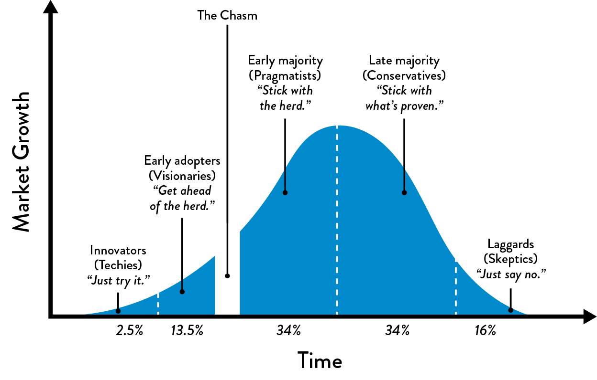

5Selecting Which Value Stream to Start With
Choosing a value stream for DevOps transformation deserves careful consideration. Not only does the value stream we choose dictate the difficulty of our transformation, but it also dictates who will be involved in the transformation. It will affect how we need to organize into teams and how we can best enable the teams and individuals in them.
Another challenge was noted by Michael Rembetsy, who helped lead the DevOps transformation as the Director of Operations at Etsy in 2009. He observed, “We must pick our transformation projects carefully—when we’re in trouble, we don’t get very many shots. Therefore, we must carefully pick and then protect those improvement projects that will most improve the state of our organization.”
Let us examine how the Nordstrom team started their DevOps transformation initiative in 2013, which Courtney Kissler, their VP of E-Commerce and Store Technologies, described at the DevOps Enterprise Summit in 2014 and 2015.
Founded in 1901, Nordstrom is a leading fashion retailer that is focused on delivering the best possible shopping experience to their customers. In 2015, Nordstrom had annual revenue of $13.5 billion.
The stage for Nordstrom’s DevOps journey was likely set in 2011 during one of their annual board of directors meetings. That year, one of the strategic topics discussed was the need for online revenue growth. They studied the plight of Blockbusters, Borders, and Barnes & Nobles, which demonstrated the dire consequences when traditional retailers were late creating competitive e-commerce capabilities—these organizations were clearly at risk of losing their position in the marketplace or even going out of business entirely.†
At that time, Courtney Kissler was the senior director of Systems Delivery and Selling Technology, responsible for a significant portion of the technology organization, including their in-store systems and online e-commerce site. As Kissler described, “In 2011, the Nordstrom technology organization was very much optimized for cost—we had outsourced many of our technology functions, we had an annual planning cycle with large batch, ‘waterfall’ software releases. Even though we had a 97% success rate of hitting our schedule, budget, and scope goals, we were ill-equipped to achieve what the five-year business strategy required from us, as Nordstrom started optimizing for speed instead of merely optimizing for cost.”
Kissler and the Nordstrom technology management team had to decide where to start their initial transformation efforts. They didn’t want to cause upheaval in the whole system. Instead, they wanted to focus on very specific areas of the business so that they could experiment and learn. Their goal was to demonstrate early wins, which would give everyone confidence that these improvements could be replicated in other areas of the organization. How exactly that would be achieved was still unknown.
They focused on three areas: the customer mobile application, their in-store restaurant systems, and their digital properties. Each of these areas had business goals that weren’t being met; thus, they were more receptive to considering a different way of working. The stories of the first two are described below.
The Nordstrom mobile application had experienced an inauspicious start. As Kissler said, “Our customers were extremely frustrated with the product, and we had uniformly negative reviews when we launched it in the App Store. Worse, the existing structure and processes (aka “the system”) had designed their processes so that they could only release updates twice per year.” In other words, any fixes to the application would have to wait months to reach the customer.
Their first goal was to enable faster or on-demand releases, providing faster iteration and the ability to respond to customer feedback. They created a dedicated product team that was solely dedicated to supporting the mobile application, with the goal of enabling that team to be able to independently implement, test, and deliver value to the customer. By doing this, they would no longer have to depend on and coordinate with scores of other teams inside Nordstrom. Furthermore, they moved from planning once per year to a continuous planning process. The result was a single prioritized backlog of work for the mobile app based on customer need—gone were all the conflicting priorities when the team had to support multiple products.
Over the following year, they eliminated testing as a separate phase of work, instead integrating it into everyone’s daily work.‡ They doubled the features being delivered per month and halved the number of defects—creating a successful outcome.
Their second area of focus was the systems supporting their in-store Café Bistro restaurants. Unlike the mobile app value stream where the business need was to reduce time to market and increase feature throughput, the business need here was to decrease cost and increase quality. In 2013, Nordstrom had completed eleven “restaurant re-concepts” which required changes to the in-store applications, causing a number of customer-impacting incidents. Disturbingly, they had planned forty-four more of these re-concepts for 2014—four times as many as in the previous year.
As Kissler stated, “One of our business leaders suggested that we triple our team size to handle these new demands, but I proposed that we had to stop throwing more bodies at the problem and instead improve the way we worked.”
They were able to identify problematic areas, such as in their work intake and deployment processes, which is where they focused their improvement efforts. They were able to reduce code deployment lead times by 60% and reduce the number of production incidents 60% to 90%.
These successes gave the teams confidence that DevOps principles and practices were applicable to a wide variety of value streams. Kissler was promoted to VP of E-Commerce and Store Technologies in 2014.
In 2015, Kissler said that in order for the selling or customer-facing technology organization to enable the business to meet their goals, “…we needed to increase productivity in all our technology value streams, not just in a few. At the management level, we created an across-the-board mandate to reduce cycle times by 20% for all customer-facing services.”
She continued, “This is an audacious challenge. We have many problems in our current state—process and cycle times are not consistently measured across teams, nor are they visible. Our first target condition requires us to help all our teams measure, make it visible, and perform experiments to start reducing their process times, iteration by iteration.”
Kissler concluded, “From a high level perspective, we believe that techniques such as value stream mapping, reducing our batch sizes toward single-piece flow, as well as using continuous delivery and microservices will get us to our desired state. However, while we are still learning, we are confident that we are heading in the right direction, and everyone knows that this effort has support from the highest levels of management.”
In this chapter, various models are presented that will enable us to replicate the thought processes that the Nordstrom team used to decide which value streams to start with. We will evaluate our candidate value streams in many ways, including whether they are a greenfield or brownfield service, a system of engagement or a system of record. We will also estimate the risk/reward balance of transforming and assess the likely level of resistance we may get from the teams we would work with.
GREENFIELD VS. BROWNFIELD SERVICES
We often categorize our software services or products as either greenfield or brownfield. These terms were originally used for urban planning and building projects. Greenfield development is when we build on undeveloped land. Brownfield development is when we build on land that was previously used for industrial purposes, potentially contaminated with hazardous waste or pollution. In urban development, many factors can make greenfield projects simpler than brownfield projects—there are no existing structures that need to be demolished nor are there toxic materials that need to be removed.
In technology, a greenfield project is a new software project or initiative, likely in the early stages of planning or implementation, where we build our applications and infrastructure anew, with few constraints. Starting with a greenfield software project can be easier, especially if the project is already funded and a team is either being created or is already in place. Furthermore, because we are starting from scratch, we can worry less about existing code bases, processes, and teams.
Greenfield DevOps projects are often pilots to demonstrate feasibility of public or private clouds, piloting deployment automation, and similar tools. An example of a greenfield DevOps project is the Hosted LabVIEW product in 2009 at National Instruments, a thirty-year-old organization with five thousand employees and $1 billion in annual revenue. To bring this product to market quickly, a new team was created and allowed to operate outside of the existing IT processes and explore the use of public clouds. The initial team included an applications architect, a systems architect, two developers, a system automation developer, an operations lead, and two offshore operations staff. By using DevOps practices, they were able to deliver Hosted LabVIEW to market in half the time of their normal product introductions.
On the other end of the spectrum are brownfield DevOps projects, these are existing products or services that are already serving customers and have potentially been in operation for years or even decades. Brownfield projects often come with significant amounts of technical debt, such as having no test automation or running on unsupported platforms. In the Nordstrom example presented earlier in this chapter, both the in-store restaurant systems and e-commerce systems were brownfield projects.
Although many believe that DevOps is primarily for greenfield projects, DevOps has been used to successfully transform brownfield projects of all sorts. In fact, over 60% of the transformation stories shared at the DevOps Enterprise Summit in 2014 were for brownfield projects. In these cases, there was a large performance gap between what the customer needed and what the organization was currently delivering, and the DevOps transformations created tremendous business benefit.
Indeed, one of the findings in the 2015 State of DevOps Report validated that the age of the application was not a significant predictor of performance; instead, what predicted performance was whether the application was architected (or could be re-architected) for testability and deployability.
Teams supporting brownfield projects may be very receptive to experimenting with DevOps, particularly when there is a widespread belief that traditional methods are insufficient to achieve their goals—and especially if there is a strong sense of urgency around the need for improvement.§
When transforming brownfield projects, we may face significant impediments and problems, especially when no automated testing exists or when there is a tightly-coupled architecture that prevents small teams from developing, testing, and deploying code independently. How we overcome these issues are discussed throughout this book.
Examples of successful brownfield transformations include:
- CSG (2013): In 2013, CSG International had $747 million in revenue and over 3,500 employees, enabling over ninety thousand customer service agents to provide billing operations and customer care to over fifty million video, voice, and data customers, executing over six billion transactions, and printing and mailing over seventy million paper bill statements every month. Their initial scope of improvement was bill printing, one of their primary businesses, and involved a COBOL mainframe application and the twenty surrounding technology platforms. As part of their transformation, they started performing daily deployments into a production-like environment, and doubled the frequency of customer releases from twice annually to four times annually. As a result, they significantly increased the reliability of the application and reduced code deployment lead times from two weeks to less than one day.
- Etsy (2009): In 2009, Etsy had thirty-five employees and was generating $87 million in revenue, but after they “barely survived the holiday retail season,” they started transforming virtually every aspect of how the organization worked, eventually turning the company into one of the most admired DevOps organizations and set the stage for a successful 2015 IPO.
CONSIDER BOTH SYSTEMS OF RECORD AND SYSTEMS OF ENGAGEMENT
The Gartner research firm has recently popularized the notion of bimodal IT, referring to the wide spectrum of services that typical enterprises support. Within bimodal IT there are systems of record, the ERP-like systems that run our business (e.g., MRP, HR, financial reporting systems), where the correctness of the transactions and data are paramount; and systems of engagement, which are customer-facing or employee-facing systems, such as e-commerce systems and productivity applications.
Systems of record typically have a slower pace of change and often have regulatory and compliance requirements (e.g., SOX). Gartner calls these types of systems “Type 1,” where the organization focuses on “doing it right.”
Systems of engagement typically have a much higher pace of change to support rapid feedback loops that enable them to conduct experimentation to discover how to best meet customer needs. Gartner calls these types of systems “Type 2,” where the organization focuses on “doing it fast.”
It may be convenient to divide up our systems into these categories; however, we know that the core, chronic conflict between “doing it right” and “doing it fast” can be broken with DevOps. The data from Puppet Labs’ State of DevOps Reports—following the lessons of Lean manufacturing—shows that high-performing organizations are able to simultaneously deliver higher levels of throughput and reliability.
Furthermore, because of how interdependent our systems are, our ability to make changes to any of these systems is limited by the system that is most difficult to safely change, which is almost always a system of record.
Scott Prugh, VP of Product Development at CSG, observed, “We’ve adopted a philosophy that rejects bi-modal IT, because every one of our customers deserve speed and quality. This means that we need technical excellence, whether the team is supporting a 30 year old mainframe application, a Java application, or a mobile application.”
Consequently, when we improve brownfield systems, we should not only strive to reduce their complexity and improve their reliability and stability, we should also make them faster, safer, and easier to change. Even when new functionality is added just to greenfield systems of engagement, they often cause reliability problems in the brownfield systems of record they rely on. By making these downstream systems safer to change, we help the entire organization more quickly and safely achieve its goals.
START WITH THE MOST SYMPATHETIC AND INNOVATIVE GROUPS
Within every organization, there will be teams and individuals with a wide range of attitudes toward the adoption of new ideas. Geoffrey A. Moore first depicted this spectrum in the form of the technology adoption life cycle in Crossing The Chasm, where the chasm represents the classic difficulty of reaching groups beyond the innovators and early adopters (see figure 9).
In other words, new ideas are often quickly embraced by innovators and early adopters, while others with more conservative attitudes resist them (the early majority, late majority, and laggards). Our goal is to find those teams that already believe in the need for DevOps principles and practices, and who possess a desire and demonstrated ability to innovate and improve their own processes. Ideally, these groups will be enthusiastic supporters of the DevOps journey.
 Figure 9: The Technology Adoption Curve (Source: Moore and McKenna, Crossing The Chasm, 15.)
Especially in the early stages, we will not spend much time trying to convert the more conservative groups. Instead, we will focus our energy on creating successes with less risk-averse groups and build out our base from there (a process that is discussed further in the next section). Even if we have the highest levels of executive sponsorship, we will avoid the big bang approach (i.e., starting everywhere all at once), choosing instead to focus our efforts in a few areas of the organization, ensuring that those initiatives are successful, and expanding from there.¶
EXPANDING DEVOPS ACROSS OUR ORGANIZATION
Regardless of how we scope our initial effort, we must demonstrate early wins and broadcast our successes. We do this by breaking up our larger improvement goals into small, incremental steps. This not only creates our improvements faster, it also enables us to discover when we have made the wrong choice of value stream—by detecting our errors early, we can quickly back up and try again, making different decisions armed with our new learnings.
As we generate successes, we earn the right to expand the scope of our DevOps initiative. We want to follow a safe sequence that methodically grows our levels of credibility, influence, and support. The following list, adapted from a course taught by Dr. Roberto Fernandez, a William F. Pounds Professor in Management at MIT, describes the ideal phases used by change agents to build and expand their coalition and base of support:
- Find Innovators and Early Adopters: In the beginning, we focus our efforts on teams who actually want to help—these are our kindred spirits and fellow travelers who are the first to volunteer to start the DevOps journey. In the ideal, these are also people who are respected and have a high degree of influence over the rest of the organization, giving our initiative more credibility.
- Build Critical Mass and Silent Majority: In the next phase, we seek to expand DevOps practices to more teams and value streams with the goal of creating a stable base of support. By working with teams who are receptive to our ideas, even if they are not the most visible or influential groups, we expand our coalition who are generating more successes, creating a “bandwagon effect” that further increases our influence. We specifically bypass dangerous political battles that could jeopardize our initiative.
- Identify the Holdouts: The “holdouts” are the high profile, influential detractors who are most likely to resist (and maybe even sabotage) our efforts. In general, we tackle this group only after we have achieved a silent majority, when we have established enough successes to successfully protect our initiative.
Expanding DevOps across an organization is no small task. It can create risk to individuals, departments, and the organization as a whole. But as Ron van Kemenade, CIO of ING, who helped transform the organization into one of the most admired technology organizations, said, “Leading change requires courage, especially in corporate environments where people are scared and fight you. But if you start small, you really have nothing to fear. Any leader needs to be brave enough to allocate teams to do some calculated risk-taking.”
CONCLUSION
Peter Drucker, a leader in the development of management education, observed that “little fish learn to be big fish in little ponds.” By choosing carefully where and how to start, we are able to experiment and learn in areas of our organization that create value without jeopardizing the rest of the organization. By doing this, we build our base of support, earn the right to expand the use of DevOps in our organization, and gain the recognition and gratitude of an ever-larger constituency.

Table of contents
- Preface
- Foreword
- Imagine a World Where Dev and Ops Become DevOps
-
Part I The Three Ways
- A BRIEF HISTORY
- 1 Agile, Continuous Delivery, and the Three Ways
- 2 The First Way: The Principles of Flow
- 3 The Second Way: The Principles of Feedback
- 4 The Third Way: The Principles of Continual Learning and Experimentation
-
Part II Where to Start
- Introduction
- 5 Selecting Which Value Stream to Start With
- 6 Understanding the Work in Our Value Stream, Making it Visible, and Expanding it Across the Organization
-
7 How to Design Our Organization and Architecture with Conway’s Law in Mind
- ORGANIZATIONAL ARCHETYPES
- PROBLEMS OFTEN CAUSED BY OVERLY FUNCTIONAL ORIENTATION (“OPTIMIZING FOR COST”)
- ENABLE MARKET-ORIENTED TEAMS (“OPTIMIZING FOR SPEED”)
- MAKING FUNCTIONAL ORIENTATION WORK
- TESTING, OPERATIONS, AND SECURITY AS EVERYONE’S JOB, EVERY DAY
- ENABLE EVERY TEAM MEMBER TO BE A GENERALIST
- FUND NOT PROJECTS, BUT SERVICES AND PRODUCTS
- DESIGN TEAM BOUNDARIES IN ACCORDANCE WITH CONWAY’S LAW
- CREATE LOOSELY-COUPLED ARCHITECTURES TO ENABLE DEVELOPER PRODUCTIVITY AND SAFETY
- CONCLUSION
- 8 How to Get Great Outcomes by Integrating Operations into the Daily Work of Development
-
PART III—THE FIRST WAY: THE TECHNICAL PRACTICES OF FLOW
- 9 Create the Foundations of Our Deployment Pipeline
-
10 Enable Fast and Reliable Automated Testing
- CONTINUOUSLY BUILD, TEST, AND INTEGRATE OUR CODE AND ENVIRONMENTS
-
BUILD A FAST AND RELIABLE AUTOMATED VALIDATION TEST SUITE
- CATCH ERRORS AS EARLY IN OUR AUTOMATED TESTING AS POSSIBLE
- ENSURE TESTS RUN QUICKLY (IN PARALLEL, IF NECESSARY)
- WRITE OUR AUTOMATED TESTS BEFORE WE WRITE THE CODE (“TEST-DRIVEN DEVELOPMENT”)
- AUTOMATE AS MANY OF OUR MANUAL TESTS AS POSSIBLE
- INTEGRATE PERFORMANCE TESTING INTO OUR TEST SUITE
- INTEGRATE NON-FUNCTIONAL REQUIREMENTS TESTING INTO OUR TEST SUITE
- PULL OUR ANDON CORD WHEN THE DEPLOYMENT PIPELINE BREAKS
- CONCLUSION
- 11 Enable and Practice Continuous Integration
- 12 Automate and Enable Low-Risk Releases
- 13 Architect for Low-Risk Releases
-
PART IV—THE SECOND WAY: THE TECHNICAL PRACTICES OF FEEDBACK
- Introduction
-
14 Create Telemetry to Enable Seeing and Solving Problems
- CREATE OUR CENTRALIZED TELEMETRY INFRASTRUCTURE
- CREATE APPLICATION LOGGING TELEMETRY THAT HELPS PRODUCTION
- USE TELEMETRY TO GUIDE PROBLEM SOLVING
- ENABLE CREATION OF PRODUCTION METRICS AS PART OF DAILY WORK
- CREATE SELF-SERVICE ACCESS TO TELEMETRY AND INFORMATION RADIATORS
- FIND AND FILL ANY TELEMETRY GAPS
- CONCLUSION
- 15 Analyze Telemetry to Better Anticipate Problems and Achieve Goals
- 16 Enable Feedback So Development and Operations Can Safely Deploy Code
- 17 Integrate Hypothesis-Driven Development and A/B Testing into Our Daily Work
-
18 Create Review and Coordination Processes to Increase Quality of Our Current Work
- THE DANGERS OF CHANGE APPROVAL PROCESSES
- POTENTIAL DANGERS OF “OVERLY CONTROLLING CHANGES”
- ENABLE COORDINATION AND SCHEDULING OF CHANGES
- ENABLE PEER REVIEW OF CHANGES
- POTENTIAL DANGERS OF DOING MORE MANUAL TESTING AND CHANGE FREEZES
- ENABLE PAIR PROGRAMMING TO IMPROVE ALL OUR CHANGES
- FEARLESSLY CUT BUREAUCRATIC PROCESSES
- CONCLUSION
- PART IV CONCLUSION
-
PART V—THE THIRD WAY: THE TECHNICAL PRACTICES OF CONTINUAL LEARNING AND EXPERIMENTATION
- Introduction
-
19 Enable and Inject Learning into Daily Work
- ESTABLISH A JUST, LEARNING CULTURE
- SCHEDULE BLAMELESS POST-MORTEM MEETINGS AFTER ACCIDENTS OCCUR
- PUBLISH OUR POST-MORTEMS AS WIDELY AS POSSIBLE
- DECREASE INCIDENT TOLERANCES TO FIND EVER-WEAKER FAILURE SIGNALS
- REDEFINE FAILURE AND ENCOURAGE CALCULATED RISK-TAKING
- INJECT PRODUCTION FAILURES TO ENABLE RESILIENCE AND LEARNING
- INSTITUTE GAME DAYS TO REHEARSE FAILURES
- CONCLUSION
-
20 Convert Local Discoveries into Global Improvements
- USE CHAT ROOMS AND CHAT BOTS TO AUTOMATE AND CAPTURE ORGANIZATIONAL KNOWLEDGE
- AUTOMATE STANDARDIZED PROCESSES IN SOFTWARE FOR RE-USE
- CREATE A SINGLE, SHARED SOURCE CODE REPOSITORY FOR OUR ENTIRE ORGANIZATION
- SPREAD KNOWLEDGE BY USING AUTOMATED TESTS AS DOCUMENTATION AND COMMUNITIES OF PRACTICE
- DESIGN FOR OPERATIONS THROUGH CODIFIED NON-FUNCTIONAL REQUIREMENTS
- BUILD REUSABLE OPERATIONS USER STORIES INTO DEVELOPMENT
- ENSURE TECHNOLOGY CHOICES HELP ACHIEVE ORGANIZATIONAL GOALS
- CONCLUSION
- 21 Reserve Time to Create Organizational Learning and Improvement
-
22 Information Security as Everyone’s Job, Every Day
- INTEGRATE SECURITY INTO DEVELOPMENT ITERATION DEMONSTRATIONS
- INTEGRATE SECURITY INTO DEFECT TRACKING AND POST-MORTEMS
- INTEGRATE PREVENTIVE SECURITY CONTROLS INTO SHARED SOURCE CODE REPOSITORIES AND SHARED SERVICES
- INTEGRATE SECURITY INTO OUR DEPLOYMENT PIPELINE
- ENSURE SECURITY OF THE APPLICATION
- ENSURE SECURITY OF OUR SOFTWARE SUPPLY CHAIN
- ENSURE SECURITY OF THE ENVIRONMENT
- INTEGRATE INFORMATION SECURITY INTO PRODUCTION TELEMETRY
- CREATING SECURITY TELEMETRY IN OUR APPLICATIONS
- CREATING SECURITY TELEMETRY IN OUR ENVIRONMENT
- PROTECT OUR DEPLOYMENT PIPELINE
- CONCLUSION
-
23 Protecting the Deployment Pipeline
- INTEGRATE SECURITY AND COMPLIANCE INTO CHANGE APPROVAL PROCESSES
- RE-CATEGORIZE THE MAJORITY OF OUR LOWER RISK CHANGES AS STANDARD CHANGES
- WHAT TO DO WHEN CHANGES ARE CATEGORIZED AS NORMAL CHANGES
- REDUCE RELIANCE ON SEPARATION OF DUTY
- ENSURE DOCUMENTATION AND PROOF FOR AUDITORS AND COMPLIANCE OFFICERS
- CONCLUSION
- PART VI CONCLUSION
- A Call to Action
-
Appendices
- APPENDIX 1 THE CONVERGENCE OF DEVOPS
- APPENDIX 2 THEORY OF CONSTRAINTS AND CORE, CHRONIC CONFLICTS
- APPENDIX 3 TABULAR FORM OF DOWNWARD SPIRAL
- APPENDIX 4 THE DANGERS OF HANDOFFS AND QUEUES
- APPENDIX 5 MYTHS OF INDUSTRIAL SAFETY
- APPENDIX 6 THE TOYOTA ANDON CORD
- APPENDIX 7 COTS SOFTWARE
- APPENDIX 8 POST-MORTEM MEETINGS
- APPENDIX 9 THE SIMIAN ARMY
- APPENDIX 10 TRANSPARENT UPTIME
- Additional Resources
- Endnotes
- Index
- Acknowledgments
- Author Biographies